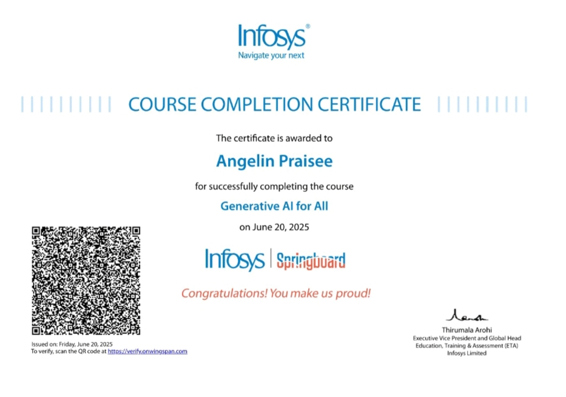
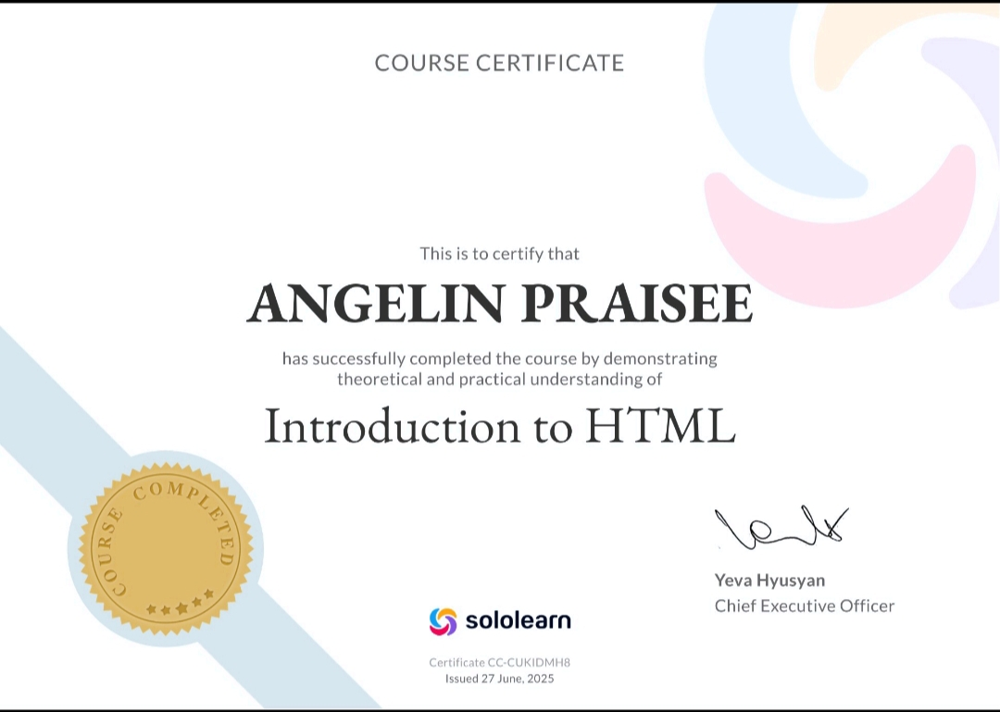
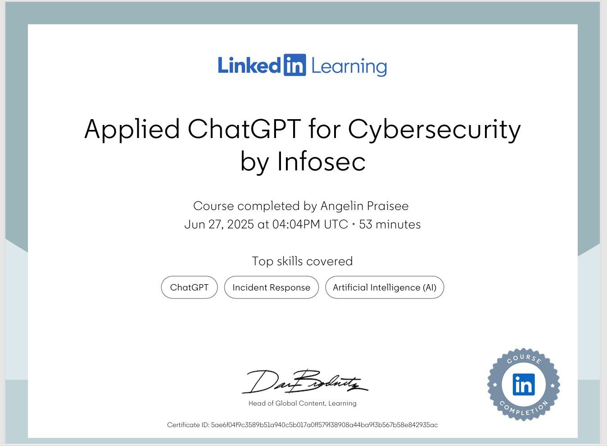

Certifications & Skills
Driven by a passion for computer science and cybersecurity, I actively pursue certifications to build real-world skills and prepare myself for impactful roles in tech industry.
- Cybersecurity foundations certificate - LinkedIn learning
- Applied ChatGPT for cybersecurity by Infosec - LinkedIn learning
- Basics of Python and python foundational certification - Infosys SpringBoard
- Coding Certificates - Hackerrank
- Microsoft Excel for data analysis - Codecademy
- Generative AI for all - Infosys SpringBoard 
- Front-End development certificates - soloLearn 

A foundational course covering the core principles of cybersecurity, including threat types, network security, cryptography and risk management. Gained practical insights into securing systems and understanding modern security practices.

Completed the applied ChatGPT for cybersecurity course offered by Infosec, which explored AI tools like ChatGPT can support and enhance cybersecurity operations.

Also completed the Python basics and Python Foundation certifications from infosys springboard, which provided a solid understanding of python programming fundamentals. These courses made me solve many problems in hackerrank.

Completed the Problem solving(basic) and Python(basic) certifications on hackerrank, which reflect my ability to write efficient code, solve algorithmic challenges, and apply core programming concepts using python. These certifications demonstrate my foundational skills in logical thinking,syntax handling and basic software development practices.

Completed the Microsoft Excel for Data analysis certification from Codecademy, gaining hands-on experience in using Excel for organizing, analysing and visualizing data.
Completed the Generative AI for all course from infosys springboard, which introduced the fundamentals of generative artificial intelligence and its rea-worls applications and particularly prompt engineering.
Also completed the HTML fundamentals course on SoloLearn, which provided a solid foundation in web development. Covered key concepts such as HTML structure, elements, tags, forms, and semantic markup, enabling me to create and structure web pages effectively.